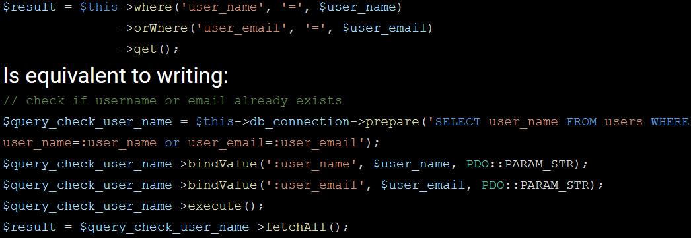

California State University Northridge / BS Computer Science
August 2015 - May 2018, Northridge, CA
Elegant ORM / Software Engineer Lead
August 2017 - December 2017, Northridge, CA
Documentation | Source Code
- We developed an Object Relational Mapper, ORM in PHP for MySQL, including a user friendly documentation.
- Worked closely with colleagues using agile software development with Scrum throughout the full software development life cycle, we analyzed requirements, and designed software components.
-
Elegant ORM is basically code that writes code for php developers to perform database queries in MySql. It shortens the amount of code php developers need to write by handling typical overhead code needed to ensure a web application is safe against SQL injection attacks. There is no need to clean “strings” or textual data being passed as bindings that can be a potential injection attack from a malicious user.

- I possess experience in doing TDD programming using PHP Unit, and Postman.
- I have experience in managing teams, the product backlog, sprint burndown excel sheets, and dividing up the tasks.
Elegant MVC Framework and E-Commerce Web Application / Software Engineer Lead
January 2018 - May 2018, Northridge, CA
Demo a supplier's account username: CharlotteCooper9 | password: password| Source Code
- A custom lightweight MVC framework was developed in order to build RESTful application programmable interfaces for our e-commerce website mockup application.
- I was team lead and took it upon myself to provide training and training materials for my colleagues that were struggling with the project.
- We successfully developed a fully functional e-commerce web application using our ORM and framework.